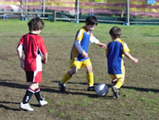
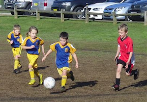
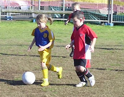
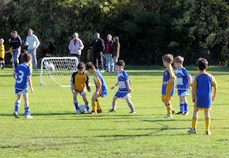
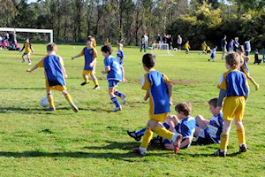

| Match Report - 13 August 2011 |
|
|
|
|
|
|
|
|
|
|


The last game of the season and the under 6 green were very excited about the
opportunity to play another week due to the rescheduled washed out games.
Ironically the Putney A team was the first and last game of the season and as

we faced them in week one, we witnessed the push ups and determination, this
was mirrored by the team on Saturday.
Both teams played their best and enjoyed the challenge the tackling, passing and
side kicks as well as accuracy on goal has developed through the season by all
team members and this is a reflection of the skills training and rills arranged
at training each week.
Thanks to Peter for all his work as Coach through the season. The game finished
with a 3-1 win to the greens.
It was a very happy little team who successfully exhibited all the positive
traits of sportsmanship throughout the season to finish with an undefeated title.
The under 6 green team represent all that the club embraces in relation to
teamwork, friendship, determination and good manners. Well done Christian,
Jasmine, Will, Elijah Blake and William!
Hip Hip hooray!
- Sarah Robson
|
|
|
|
U6 White C
0 - 2
|
|
On yet another sunny morning we played against U6 White A and lost 2-0. Everyone
played well and chased the ball there were some near misses but a lot of fun!
What a fantastic season and what a joy to watch our team grow as soccer players!
- Lisa Mach
|
|
|
|
U8 Brown
2 - 1
|
|


An early start for the last game of the season and we had alot of spectators to
cheer the U8 Brown team on the sidelines. The game was evenly matched and the
NRS team seemed to have trouble again with the early start, we tend to forget
a few of the positional elements. Needless to say the Normanhurst team were in
the same boat. David was umpiring the first half and was assisting both teams
where needed.
The NRS team had the majority of attacking play in the first 20 minutes and
Issak scored an excellent goal to put us in the lead. Ben made some great saves
in the goals in the first half. Liam and Brooklyn were strong in defense. Jake,
Declan and Luca were feeding the ball through the midfield. Sam and Oliver were
strong in the forwards. At half time some words of wisdom from Ben and Jersey
was passed over to Issak for the second half in goals. The NRS sprung into action
after the oranges at half time and the team were playing very well. Passing and
positioning improved throughout the second half. There was an excellent
combination of passes which lead to Sam securing a goal from an great shot
on goals.The Normanhurst team began to attack strongly and Issak was like
lightening in the goals. The 20 minutes passed and the team started to tire.
Unfortunately the Normanhurst coach did not want to call time and as all other
teams finished at the grounds, our game continued for another 10 minutes and
Normanhurst broke through in the end, for a 2-1 win to NRS.
Well done to all the members of the team on a great season, filled with fun,
laughter, lots of playing in the dirt and the start of some special friendships.
Thank you to all the parents, sibblings, aunts, uncles, grandparents and friends
that have supported the team over the season. The children enjoy the essence of
the team sport with all the people involved. Thanks to Chris and Neil for their
hard work at training on Wednesday's. Thanks to all the great dads ( esp. David,
John and Mark) for the guidance on Saturdays and umpiring and of course the mums
for coordinating the logistics with several games of sport in a day. Overall a
great season and what better way to celebrate than with a final win and some cake!
Congratulations to all - be proud of yourselves.
- Sarah Robson
|
|
|
|
U11 Division 1
0 - 3
|
|
It was the game that we had to win to get to the grand finals, but it wasn't to
be. It just wasn't our day. Kenthurst formed a formidable presence on the field
and were the better team on the day, scoring two goals in the first half and a
further one in the second to which we had no reply.
Luck wasn't with us either, with several opportunities sailing harmlessly past the
wrong side of the goal frame. For their part, Kenthurst played a big-kicking and
rather unstructured game of football, particularly in the second half when all
they had to do was protect the scoreline. So any work and toil applied to move
the ball forward in a structured passing movement was rendered null and void when
all it met with was the big boot of the Kenthurst defence. Not an attractive game
by any stretch, but at least we are still thinking in terms of moving the ball
around the field with purpose. In time, with greater ball control, there won't be
as many loose balls for the opposition to pounce on and kick into oblivion.
The grand final is out of reach now, but the team can still look forward to the
Champion of Champions tournament that they qualified for on account of winning
the premiership, where they can pit their skills against the other U11 division
one teams in the state. It has been a long and hard season for our talented young
boys this year, with a much higher degree of success than failure, and we look
forward to seeing them in action again next month in the Champion of Champions!
Well done and good luck North Ryde!
- Mark Howard
|
|
|
|
U15 Division 2
0 - 4
|
|
For the fifth teen game of the year, a Semi final round, we played Redfield Lions
FC, who simply was the better team on the day, which was reflected by the score
of 0-4. The Redfield Lions FC is a tough team who beat us on all 3 occasions we
played and we only lost 5 times in the season.
Overall, the field and events conspired against us, see la vie.
However, Paul and I have written about the poor refereeing with appropriate
comments to Mark Simpson - President of North Ryde Soccer Club.
These have been officially passed on to GHFA and GHFRA as constructive comments
so that they can then assist the referee’s future development.
I would like to thank all the parents who came to support our team... you do make
a difference!
- Joe Rosenfels
|